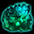
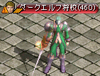
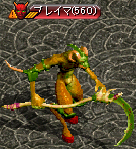
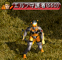
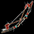
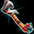

2015年9月17日アップデート

2015年9月17日 アップデートの変更内容一覧
冒険家協会ブルンネンシュティグ本部に新規NPC追加
「冒険家協会バー」の追加
「古代タティリス遺跡 B8」実装
コスミックストーンシリーズ新機能追加
「活動の植木鉢」パッションフラワー追加
メインクエスト利便性向上
ワールドチャットの実装
一部秘密ダンジョンの報酬Gold変更
新アイテム「霊珠」実装
一部マップBGM変更
決戦ワールドに獣人/メイド/黒魔術師の武器追加
一部マップに「パーティーボスモンスター」「ミラーダンジョン」追加
スキル一部調整
新アイテム「ブレイブボウ」「ブレイブバトルアックス」実装
パーティバフ「集結の力」実装
属性抵抗値の緩和
不具合
冒険家協会ブルンネンシュティグ本部に新規NPC追加
マップ変更が行われ、10人の新規NPCが追加されました。

| NPC | 役割 |
|---|---|
| ネーラ （25.53） |
図書館の管理人。周辺にある本棚をクリックすると覚醒/転生/スキルなど、冒険に役に立つ様々な知識を得ることができます。 |
| 限界突破担当官 （28.35） |
限界突破称号レベルに合わせたクエスト受諾NPCまでテレポートしてくれます。 ※クエスト受諾最低Lv200未満の場合はテレポートできません。 |
| 覚醒担当官 （32.32） |
覚醒していないキャラクターは、クエスト受諾NPCまでテレポートしてくれます。 ※クエスト受諾最低Lv300未満の場合はテレポートできません。 ※転生やスキル再配分巻物によって覚醒タイプが初期化された場合、該当のクエストは完了状態であるため、テレポートできません。 |
| 転生担当官 （28.35） |
転生回数に合わせたクエスト受諾NPCまでテレポートしてくれます。 ※クエスト受諾最低Lv600未満の場合はテレポートできません。 |
| 恩寵商人ランター （50.12） |
使用すると恩寵効果が発動する「恩寵の魔石」を販売してくれます。 |
| デザイナーユン （55.17） |
ノーマルコスチュームの販売、コスチューム分解を行ってくれます。 |
| 武器商人トゥンガ （58.20） |
ユニークアイテムの分解を行ってくれます。 |
| 武器職人セリー （61.23） |
インフィニティシリーズの強化や錬成、黄金のチケット交換を行ってくれます。 |
| ナギ・タニア （66.28） |
各種エンチャント水晶の販売を行ってくれます。 |
| ミラーテレポータ （50.48） |
パーティーボスモンスターが出現するマップに1万Gで移動を行ってくれます。 |
 |
恩寵商人ランター（50.12）では、 使用すると恩寵効果が発動する恩寵の魔石を販売してくれます。 |
 |
恩寵を取得していない場合は、恩寵の魔石を使用できません。 複数使用しても、持続時間は重複されません。 |
 |
ギルド戦/攻城戦/GVGアリーナでは使用不可ですが、現在修正中。 |
 |
ミラーテレポータ（50.48）では、 パーティーボスモンスターが出現するマップに1万Gで移動を行ってくれます。 |
.gif) |
ポータル系アイテムを所持している場合は無料。 |
「冒険家協会バー」の追加
冒険家協会の各支部から、冒険家協会バーに入場することができます。
ただし、冒険家協会バーからマップ移動すると、入場した冒険家協会の各支部ではなく冒険家協会ブルンネンシュティグ本部に移動します。

| NPC | 役割 |
|---|---|
| ジョン・マルコ （17.25） |
一般秘密ダンジョンの入口が存在するマップまで、無料で移動を行ってくれます。 |
| ギブソン （29.50） |
ギルドに加入している場合は、所属しているギルドホールへ移動を行ってくれます。 また、攻城フィールドにも転送を行ってくれます。 |
| レム （40.20） |
メインクエストで使用する一部アイテムの販売を行ってくれます。 |
| デーボラ （43.23） |
RED STONEを所持している場合のみ秘密の山荘または港町ボルティッシュに移動を行ってくれます。 |
 |
レム（40.20）では、 メインクエストで使用する一部アイテムの販売を行ってくれます。 |
 |
マーブルガゴイルの羽 1万G/個 ビッグシェルの甲羅 1万G/個 クローラーの抜け殻汁 1万G/個 蜘蛛の糸 5万G/個 合計 40万G ただし、必要個数以上所持することはできません。 メインクエストを進行させていない場合は、NPCに話しかけても反応しません。 |
 |
デーボラ（43.23）では、 RED STONEを所持している場合のみ秘密の山荘または港町ボルティッシュに移動を行ってくれます。 |
 |
「古代タティリス遺跡 B8」実装
古代タティリス遺跡 B8（適正Lv801〜900）が実装されました。
ギルドホールランク5を所持している場合は、考古学者グランより修復済みのタティリス遺跡の出土品5個とタティリス遺跡 B8の入場券を交換することができます。

コスミックストーンシリーズ新機能追加
適性レベル以上のキャラクターで古代タティリス遺跡に入場し、モンスターを討伐した場合、コスミックストーンシリーズを所持していれば一定の確率で神秘の石のかけらがドロップするようになりました。
適正よりも高いレベルのギルドダンジョンに入場した場合は、コスミックストーンシリーズを所持していても神秘の石のかけらはドロップしません。
「活動の植木鉢」パッションフラワー追加
  |
古都ブルンネンシュティグ リラ（71.119）または冒険家協会ブルンネンシュティグ本部 ソラ（70.32）より、活動の植木鉢をもらいます。 |
 |
活動の植木鉢はインベントリに入れた状態で狩りを行うことで成長。 パッションフラワーは、成長率100％（24時間）で実1個を収穫することができます。 |
 |
既に休息の植木鉢を所持している状態で 活動の植木鉢も所持したい場合は、 ? いいえ。他の花にします。 を選択 |
 |
? パッションフラワーを育ててみます。 を選択。 ベリーを収穫する際には、休息の植木鉢と同様に一定の手数料がかかります。 |
| 活動の植木鉢 | 特徴 | 果実 | 持続時間 | 経験値増加 | ||
|---|---|---|---|---|---|---|
| パッション フラワー |
最大成長時間 24時間 収穫可能数 1個 |
パッションベリー | 30分 | 150％ | ||
| 新鮮なパッションベリー | 40分 | 150％ | ||||
| 熟したパッションベリー | 40分 | 200％ | ||||
メインクエスト利便性向上
クエストアイテムのドロップ率アップやクエスト対象のモンスター数増加、マップ移動補助機能など、メインクエストを進行させるのがより便利になりました。
主な変更点
・クリスティラから一部マップへ自動でワープ。
メインクエスト1-5-1 廃坑 Ｂ５
メインクエスト1-5-5 廃坑 Ｂ７
メインクエスト1-5-6 キャンサー気孔 Ｂ７
メインクエスト1-5-7 スウェブタワー １７Ｆ
・スウェブタワー入口前のNPCからスウェブタワー ２０Ｆまで移動可能。
・やぶ森の中にいたファーブが、鉄の道 / 道の中間地点のやぶ森の中への入口前に移動。
・その他多数、モンスターの必要討伐数が減少。
・その他多数、クエストアイテムのドロップ率が上昇。
ワールドチャットの実装
ワールドチャットは1日で2回、最高4回までチャージされます。
毎日0時に回数がチャージされますが、0時以降に一度ログアウトしないとチャージ回数が更新されません。
ワールドチャット使用をする場合は、チャットウィンドウに「!!(半角スペース空き）叫びたい内容」と入力します。
チャット欄に表示されたワールドチャットに対して、「Shift+右クリック」でパーティー申請/耳打ち/友達申請を行うことも可能です。

一部秘密ダンジョンの報酬Gold変更
秘密ダンジョン終了時に報酬として獲得できるGoldの金額が変更、追加されました。
| 秘密ダンジョン | 報酬ゴールド | |
|---|---|---|
| 変更前 | 変更後 | |
| 古代王の墓 | PT平均Lv1〜50 15万 PT平均Lv51〜75 20万 PT平均Lv76〜100 25万 |
PT平均Lv1〜25 10万 PT平均Lv26〜50 15万 PT平均Lv51〜75 20万 PT平均Lv76〜100 25万 |
| マーズ・ルガスの秘密基地 | - | 27万 |
| 河口ダンジョンの隠された宝物部屋 | 4万250G | 30万 |
| ソルティケーブの混沌の空間 | - | 33万 |
| 呪いの墓に建つ呪われし塔 | 10万 | 35万 |
| 小さい傭兵墓に巣食う亡者共の宝物庫 | 60万 | 50万 |
| 過ぎし栄光の展示場にある遺物保管所 | 7000 | 40万 |
| キングクラブの巣 | - | 50万 |
| ハイランド洞窟の堕落した部族 | - | 60万 |
| ダークソウルの封印場所 | - | 60万 |
| レッドアイの隠されたアジト | - | 60万 （調整中） |
| レッドアイ特殊エージェントのアジト | - | 70万 |
| フォーリン望楼の隠された地下監獄 | - | 80万 |
| カダーム・ギガスの寺院 | - | 簡単 60万 普通 80万 難しい 100万 非常に難しい 120万 |
| ダークエルフ王宮の隠された倉庫 | - | 110万 |
| スパインホールのミステリーゾーン | - | 120万 |
| 呪いを受けたミズナ洞窟の隠された洞窟 | - | 130万 |
| 名も無き遺跡のデーモンキングのねぐら | 150万 | 150万 |
| ヘソパルの洞窟 | - | 150万/165万 |
| モリネルタワーの隠された研究所 | - | 170万 |
| ビックマウスダンジョンのラットキング区域 | - | 180万 |
| 閉鎖された時空研究所 | - | 200万 |
| ヴァンパイア・キングダム | - | Dランク - Cランク 180万 Bランク 200万 Aランク 220万 Sランク 250万 |
新アイテム「霊珠」実装
一定確率でモンスターより霊珠アイテムがドロップします。
古都ブルンネンシュティグの霊珠コレクター（66.122）、冒険家協会ブルンネンシュティグ本部の霊珠コレクター（58.27）に販売することで、Goldと交換してもらうことができます。
霊珠は銀行保管/ギルド倉庫保存/キャラクター間取引/露店販売/破壊不可。

| 霊珠の種類 | ゴールド | |
|---|---|---|
|  | 下級モンスターの霊珠 | 1000万 |
| 中級モンスターの霊珠 | 3000万 | |
| 上級モンスターの霊珠 | 5000万 | |
一部マップBGM変更
ログイン画面/ギルドホールレベル1/古都ブルンネンシュティグなどの、一部BGMが変更されました。
決戦ワールドに獣人/メイド/黒魔術師の武器追加
決戦都市ヒルドブラントに獣人/メイド/黒魔術師の武器を販売する新規NPCロイ（42.50）、メリッサ（40.78）、ビーデル（43.82）が追加されました。

一部マップに「パーティーボスモンスター」「ミラーダンジョン」追加
パーティーボスモンスター出現マップが増加し、ミラーダンジョンが多数追加されました。
冒険家協会ブルンネンシュティグ本部のミラーテレポータ（50.48）に1万G支払うと、ミラーダンジョンに移動することができます。
ポータル系アイテムを所持している場合は無料です。
| セミボスモンスター | パーティー ボスモンスター |
ミラーダンジョンのあるマップ/ パーティーボスモンスター出現マップ |
ボーナス 経験値 |
|---|---|---|---|
 |
ダークシャドウ （Lv165） |
廃坑 Ｂ１０ 海の神殿 Ｂ３ パブル鉱山 Ｂ１ |
100万 |
 |
リッチ （Lv220） |
呪いの墓 Ｂ１ レッドアイ秘密基地 Ｂ２ 魔法傭兵の墓 Ｂ２ |
180万 |
 |
ソウルガーダー （Lv250） |
小さい傭兵の墓 Ｂ１ レッドアイ秘密基地 Ｂ３ 海の神殿 Ｂ４ |
250万 |
 |
タートルドラゴ （Lv285） |
キャンサーの巣 Ｂ４ レッドアイ秘密基地 Ｂ４ ミルトリムの道 / シュトラセラト入口付近 |
250万 |
 |
デスナイト （Lv305） |
スウェブタワー １１Ｆ レッドアイ秘密基地 Ｂ５ レッドアイ倉庫 過ぎた栄光の展示場 |
300万 |
 |
狂気の指揮官 （Lv365） |
フォーリン望楼 地下 ガディウス大砂漠 / モリネルタワー付近 デフヒルズ古代遺跡 B1 パブル鉱山 Ｂ２ |
310万 |
 |
デスピンサー （Lv400） |
暴かれた納骨堂 Ｂ１ デフヒルズ小さな洞窟 Ｂ１ デフヒルズ小さな洞窟 Ｂ２ バヘル大河 / 東バヘル川 バヘル台地 / エルベルグ山脈西部地域 |
350万 |
|  | ダークエルフ将校 （Lv460） |
ダークエルフ王宮 １Ｆ ゴリマ沼地 ネイダック平原 / ラカリフサ北部地域 ダークエルフ王宮への近道 西プラトン街道 / グレートフォレスト入口 |
390万 |
 |
悪夢のサソリ （Lv515） |
呪いを受けたミズナの洞窟 Ｂ１ 隠された収容所 南フォーリンロード / エルン山南部地域 東プラトン街道 / イースタンブリッジ付近 中央プラトン街道 / グレートフォレスト入口付近 |
430万 |
 |
火炎の鬼 （Lv545） |
兵営 B1 南フォーリンロード / テレット・トンネル出口付近 ダメルの地下迷宮 B1 西プラトン街道 / アリアン東部地域 ソゴム山脈 赤山登山路 |
430万 |
|  | ブレイマ （Lv560） |
名も無き遺跡 Ｂ２ ナラダ平原の沼地帯 / ノーススワンプ ルリリバー / 川河口 エルベルグ山脈 / ハノブ西部地域 地下界補給倉庫 |
470万 |
 |
サタン （Lv580） |
旅館 １Ｆ 東プラトン街道 / 道の中間地点 レッドアイ秘密基地 Ｂ６ ソゴム山脈赤山 クェレスプリング湖 |
470万 |
 |
ラットキング （Lv620） |
ビックマウスダンジョン Ｂ４ モリネルタワー 地上４階 北フォーリンロード / ビガプール南部地域 ブラックファイヤーダンジョン 埋もれた地下別荘 B3 |
510万 |
 |
オーガゼネラル （Lv660） |
ガルカス悪魔軍集結地 Ｂ１ ガディウス大砂漠 / デフヒルズ北側 ガルカス悪魔軍集結地 Ｂ２ 東プラトン街道 / エルベルグ山脈 峠 ハンヒ山脈 / ドレム川付近 |
510万 |
|  | エルフ守護者 （Lv660） |
時の森（1層目） 半島の海辺 北フォーリンロード / ネイダック平原地帯 疑問の森 北西部 |
550万 |
 |
ハゲワシ闘士 （Lv710） |
時の森（3層目） 時の森（2層目） 神秘の洞窟 Ｂ２ |
590万 |
スキル一部調整
プリンセスのスキル「ボトル投げ」調整
・思い出の指輪[ソウルガード]を使用しても、追加ダメージのみ思い出の指輪[ソウルガード]の効果を無視してダメージを受けていましたが、他の攻撃効果と同様にダメージが1となるように修正。
・ブロックしたにも関わらず、「ボトル投げ」の一部ダメージがブロック効果を貫通し、対象キャラクターにダメージを与えていた問題を修正。
・ビショップのスキル「ミラータワー」での追加ダメージ防御を修正。
・ギルド戦フィールド/攻城戦フィールドにて約80％のダメージ上昇。
ランサーのスキル「エントラップメントピアシング」調整
・ギルドバトルフィールド/攻城戦において最大12分身になります。
ただし分身数が9以上になっても、スキル説明欄の分身数は8のままとなります。
通常マップでの最大分身数は8で変わりません。
Slv65 ⇒ 9分身
Slv80 ⇒ 10分身
Slv89 ⇒ 11分身
Slv95 ⇒ 12分身
新アイテム「ブレイブボウ」「ブレイブバトルアックス」実装
人間キャラクター追加ダメージ効果のあるアーチャー専用の新武器「ブレイブボウ」と、剣士・ネクロマンサー専用の「ブレイブバトルアックス」が追加されました。
モンスターを討伐することで低確率でドロップし、入手することができます。
PVP用武器の詳細は ⇒ ブレイブ/インテリジェンスシリーズ
| ブレイブボウ[Nx] | ||
|---|---|---|
|  | <基本情報> 攻撃力 84~92 (1.50秒) 射程距離 750 決定打 +[0~1]％ ダメージ +270％ 知恵 +180 水ダメージ 420〜680 コールド 6Frame 闇ダメージ 366〜466 呪い 5秒 敵逃亡 50％ 人間型キャラクターに追加で100％のダメージを与える。 <錬成 オプション 情報> アイテム着用レベル -110 ダメージ +50％ 最終ダメージ +10％ ダブルクリティカルダメージ 10％ 増加 |
|
| <要求能力値> レベル 631 力 176 敏捷 250 |
<着用可能な職業> アーチャー |
|
| <説明> 異邦人たちに殺戮され、今は消えてしまった勇敢な種族が好んで利用した弓。 ※ 封印された力を解放するには‘封印解放道具箱'が必要です |
||
| ブレイブバトルアックス[Nx] | ||
|  | <基本情報> 攻撃力 70~80 (1.00秒) 射程距離 100 決定打 +[0~1]％ ダメージ +270％ 知恵 +180 水ダメージ 420〜680 コールド 6Frame 闇ダメージ 366〜466 呪い 5秒 敵逃亡 50％ 人間型キャラクターに追加で160％のダメージを与える。 <錬成 オプション 情報> アイテム着用レベル -110 ダメージ +50％ 最終ダメージ +10％ ダブルクリティカルダメージ 10％ 増加 |
|
| <要求能力値> レベル 631 力 176 敏捷 250 |
<着用可能な職業> 剣士 ネクロマンサー |
|
| <説明> 異邦人たちに殺戮され、今は消えてしまった勇敢な種族が好んで利用した大きな斧。 ※ 封印された力を解放するには‘封印解放道具箱'が必要です |
||
パーティーバフ「集結の力」実装
パーティーを結成すると「集結の力」バフが発動し、画面右下にアイコンが表示されます。

| 「集結の力」バフ効果 | |||
|---|---|---|---|
| パーティー人数 | 狩り経験値 | スキルレベル | ユニークアイテムドロップ率 |
| 2〜4人 | +5％ | - | - |
| 5〜7人 | +5％ | +1 | - |
| 8人 | +10％ | +2 | +10％ |
属性抵抗値の緩和
全てのギルド戦/攻城戦マップにおいて、各種属性抵抗値（火/水/風/土/光/闇）の最大抵抗値上限が70％に設定されました。
属性吸収については、変更ありません。
不具合
・ギルドダンジョン入口で「不思議な紺碧の壺」が入手できなくなっています。
⇒2015年10月1日メンテナンスにて修正完了
・ギルド戦/攻城戦/決戦ワールドにて「集結の力」の効果が発動してしまいます。
⇒2015年10月1日メンテナンスにて修正完了
・副ギルドマスターに「ギルドポイント戦実行」の権限を設定し、副ギルドマスターがパーティーリーダーとなってギルド事務官に話しかけても、ポイント戦を行うことができません。
⇒2015年10月1日メンテナンスにて修正完了
・冒険家協会ブルンネンシュティグ本部のミラーテレポータから移動する際に、一部本来の挙動と違います。
【移動時に1万G支払わずに移動が行われてしまう場所】
半島の海辺
北フォーリンロード/ネイダック平原地帯
時の森 1層
時の森 2層
時の森 3層
神秘の洞窟 B2
【プレミアムゾーンであるにも関わらず、スフィアー系アイテムなしで移動が行われてしまう場所】
埋もれた地下別荘 B3
デフヒルズ古代遺跡B1
⇒2015年10月1日メンテナンスにて修正完了
・新規に追加されたミラーマップでスフィアー系アイテムの「街に戻る」「記憶する」の機能、および「ギルドホールの時計」機能が使用できません。
⇒日本特別仕様として「街に戻る」「記憶する」ができるよう修正予定
・暴かれた納骨堂B1に出現する覚醒パンプキンの出現個数が1となっており、出現座標・リポップ時間も従来の日本仕様と違います。
⇒2015年10月1日メンテナンスにて修正完了